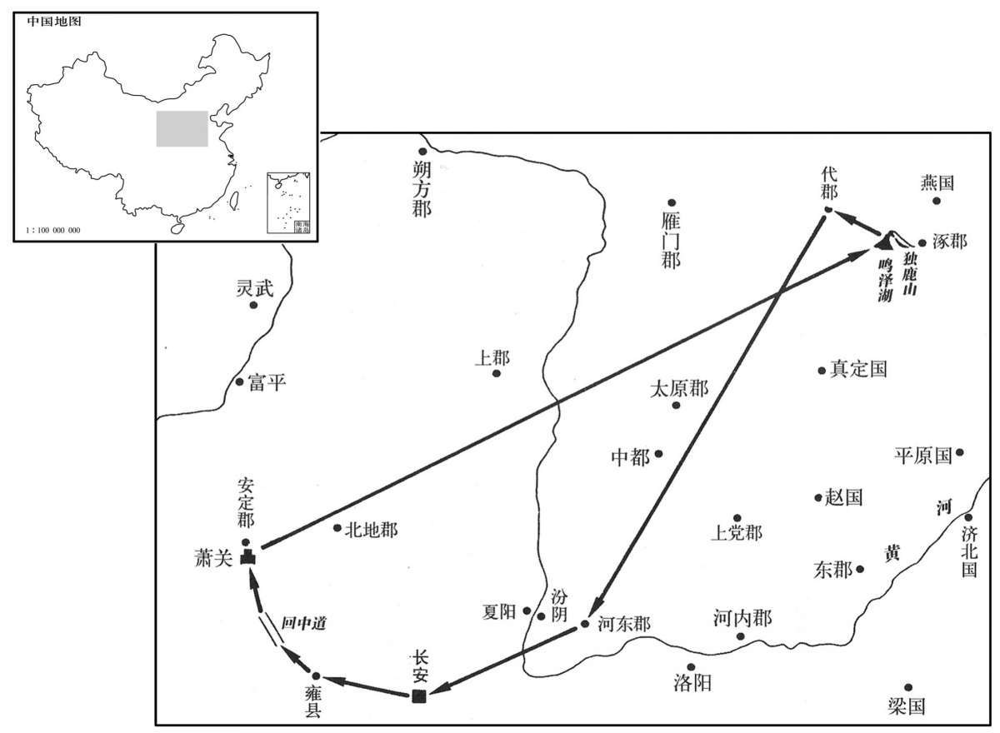

公元前107年资治通鉴：本年记事、原文与白话对照
按原书编年位置阅读；追叙和史论不等于本年发生的事件。白话采用所据译本，缺译不以生成译文补齐。
卷21 · 本年记事
公元前107年 · 汉世宗孝武皇帝元封四年
元封四年〔（甲戌、前一○八）〕
上传原文件年头的数字有误；按本卷年号与相邻年份定位为前107年，原字保留。
上传原文的注释括号有异常，字符原样保留；无法可靠划分的段落默认全文显示。
本年事件索引（现代整理）

本年形势与背景参考图
冬，十月，上行幸雍，祠五畤。〔雍，于用翻。畤，音止。〕通回中道，遂北出萧关，〔师古曰：回中在安定高平，有险阻；萧关在其北。此盖自回中通道以出萧关。〕历独鹿、鸣泽，〔服虔曰：独鹿，山名；鸣泽，泽名；皆在涿郡遒县北界。水经注：泽渚方十五里。〕自代而还，幸河东。春，三月，祠后土，赦汾阴、夏阳、中都死罪以下。
冬季，十月，汉武帝巡游至雍，祭祀于五。回中的道路已然打通，于是汉武帝北出萧关，经独鹿山、鸣泽湖，到代地返回、途中巡察了河东郡。春季，三月，汉武帝祭祀后土神，下令赦免汾阴、夏阳、中都地区死刑以下囚犯。
夏、大旱。
夏季，大旱。
匈奴自卫、霍度幕以来，〔度幕见十九卷元狩四年。〕希复为寇，〔复，扶又翻；下同。〕远徙北方，休养士马，习射猎，数使使于汉，〔数，色角翻。使使，疏吏翻。〕好辞甘言求请和亲。汉使北地人王乌等窥匈奴，乌从其俗，去节入穹庐，〔去，羌吕翻。师古曰：穹庐，毡帐也。索隐曰：盖以毡为庐，崇穹然。而宋均曰：穹，兽名，亦异说也。〕单于爱之，佯许甘言，为遣其太子入汉为质。〔质，音致。〕汉使杨信于匈奴，信不肯从其俗，单于曰：“故约汉尝遣翁主，给缯絮食物有品，以和亲，〔师古曰：品，谓等差也。〕而匈奴亦不扰边。今乃欲反古，〔师古曰：反，违也。〕令吾太子为质，无几矣。”〔师古曰：言遣太子为质，则匈奴国中所余者无几，皆当尽也。余谓匈奴盖自谓本与汉为邻敌之国，今乃令以太子为质，是其国势削弱，所余无几也。几，居岂翻。〕信既归，汉又使王乌往，而单于复讇以甘言，〔师古曰：讇，古谄字。〕欲多得汉财物，绐谓王乌曰：“吾欲入汉见天子面，相约为兄弟。”王乌归报汉，汉为单于筑邸于长安。〔汉为，于伪翻。〕匈奴曰：“非得汉贵人使，吾不与诚语。”〔师古曰：诚，实也。〕匈奴使其贵人至汉，病，汉予药，欲愈之，〔予，读曰与。〕不幸而死。汉使路充国佩二千石印绶往使，因送其丧，厚葬，直数千金，曰：“此汉贵人也。”单于以为汉杀吾贵使者，乃留路充国不归。诸所言者，单于特空绐王乌，〔师古曰：特，但也。〕殊无意入汉及遣太子。于是匈奴数使奇张：“奇”作“骑”。】〕兵侵犯汉边。〔数，所角翻。〕乃拜郭昌为拔胡将军，及浞野侯屯朔方以东，备胡。
匈奴自卫青、霍去病率军穿越大沙漠以来，很少再对汉朝进行侵扰，迁往北方很远的地方，休养士卒马匹，进行射猎训练，并多次派使臣到汉朝来，用甜言蜜语请求和亲。汉朝派北地人王乌等前去窥探匈奴的虚实，王乌遵从匈奴的风俗，放下使者的旄节，自己进入匈奴单于的毡帐之中。单于很喜欢他，假意用好听的话许诺，要为王乌派匈奴太子到汉朝做人质。汉朝又派杨信为使者前往匈奴。杨信不肯遵从匈奴的风俗，单于说：“据从前的盟约，汉朝曾将其藩王的女儿嫁到匈奴来，供给一定数量的缯絮、食物，用这种方式和亲；匈奴也不再侵扰汉朝的边境。如今却要违反以往的盟约，让我的太子去做人质，那还能剩下什么呢？”杨信回来后，汉朝再次派王乌前往匈奴，单于又用好话献媚，希望多得到汉朝的财物，骗王乌说：“我想亲自到汉朝去面见天子，相互结为兄弟。”王乌回来后报告汉武帝，汉武帝下令在长安为单于修建宫邸。匈奴又表示：“除非汉朝派地位尊贵的人作为使者前来，否则我们不说实话。”匈奴派地位尊贵的人到汉朝来，来人生了病，汉朝给他药吃，想治好他的病，但他却不幸死去。于是，汉朝派路充国佩带二千石官员的印绶，出使匈奴，顺便将匈奴使臣灵柩送回，并致送丰厚的丧葬费，价值数千金，又对匈奴介绍路充国说：“这是汉朝地位尊贵的人。”单于认为是汉朝将其尊贵的使臣杀了，所以将路充国扣留匈奴，不放他回国。以前所说的话，都是单于故意用空言欺骗王乌，他根本就无意到汉朝去，也无意派太子去。因此匈奴屡次派出奇兵，侵犯汉朝边界。于是，汉武帝任命郭昌为拔胡将军，与浞野侯赵破奴屯兵于朔方以东地区防备匈奴。
译本所载内容待核对（不作白话）
>/B